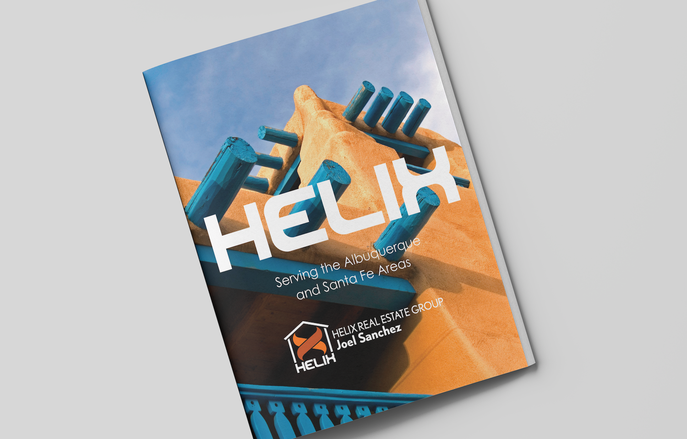
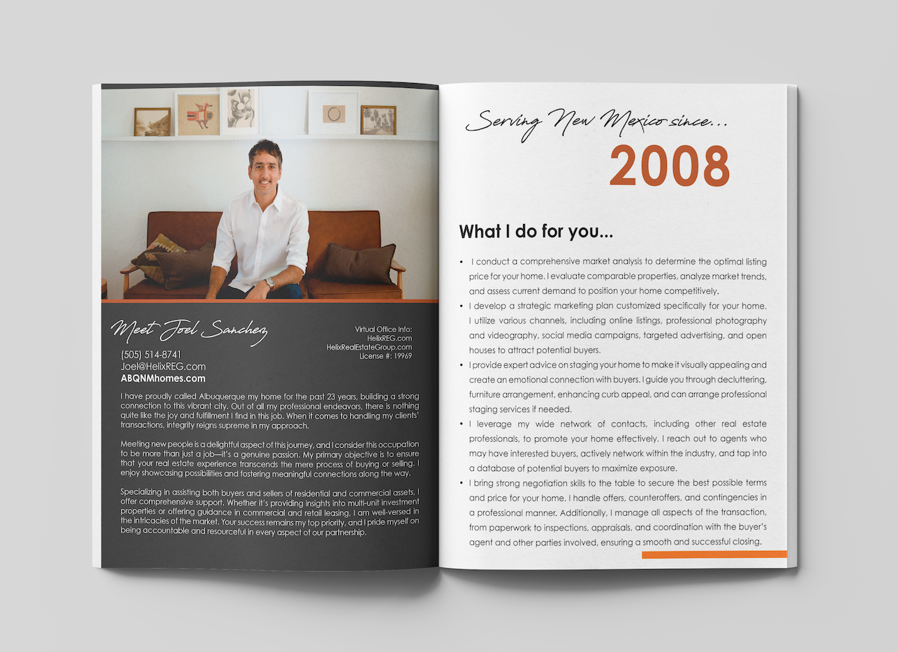
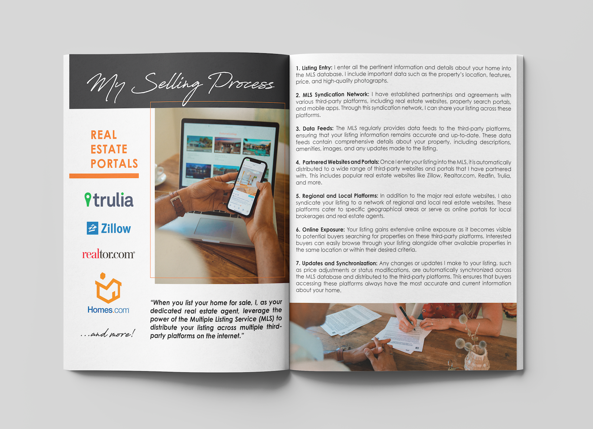
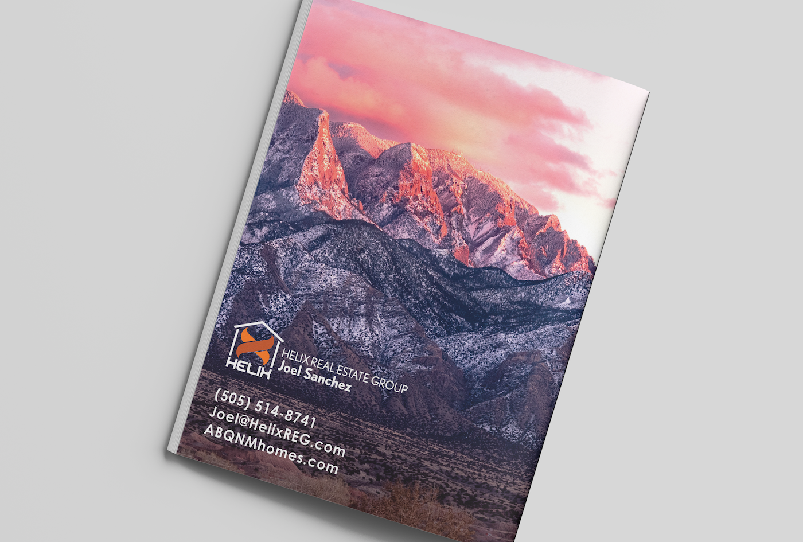

Helix Real Estate Group
Helix Real Estate Group needed a professional and cohesive visual presence to support their growing real estate business and establish credibility within a competitive market. The project included the design and development of a custom WordPress website, along with a variety of branded marketing materials that would help the company communicate effectively with prospective buyers, sellers, investors, and community partners.
Working closely with the Helix team, I developed a visual identity system that aligned with their brand values and translated consistently across both digital and print channels. The website was designed to improve user experience, provide clear pathways for visitors to explore services, and encourage lead generation through strategic calls-to-action and intuitive navigation.
Beyond the website, I created a range of marketing collateral, including brochures, print advertisements, social media graphics, signage, and promotional materials. Maintaining brand consistency across multiple touchpoints helped strengthen recognition and create a professional customer experience throughout the buyer journey.




This project demonstrates how strategic design can support business growth by combining branding, digital marketing, user experience, and visual communication into a unified system that serves both business goals and customer needs.